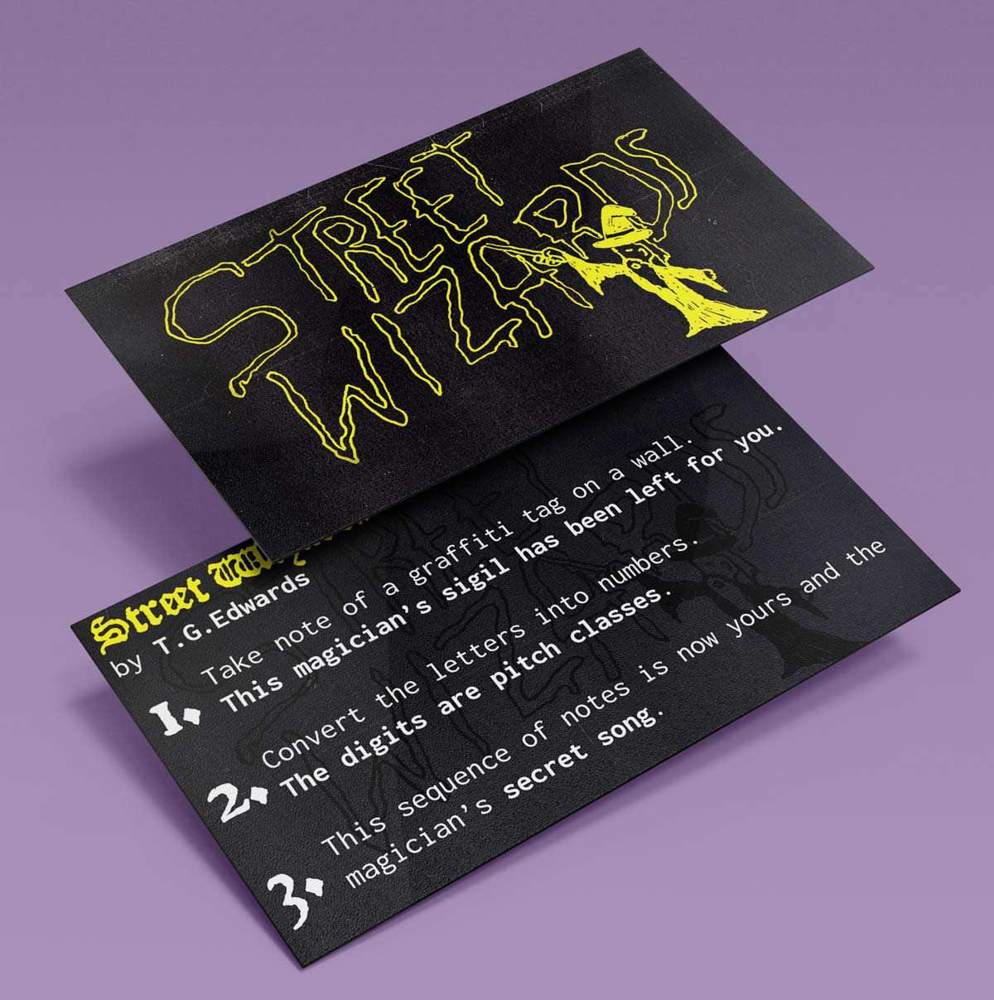
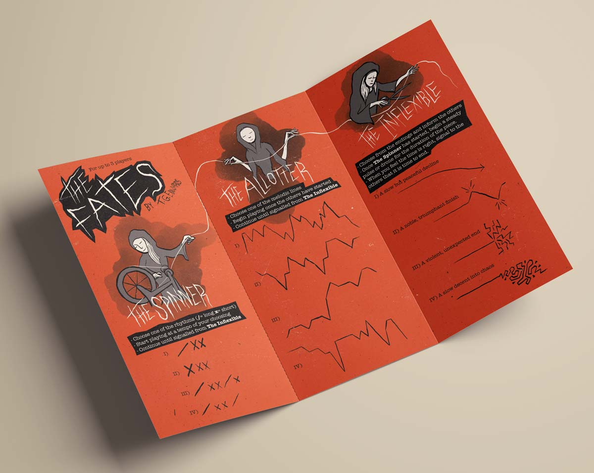
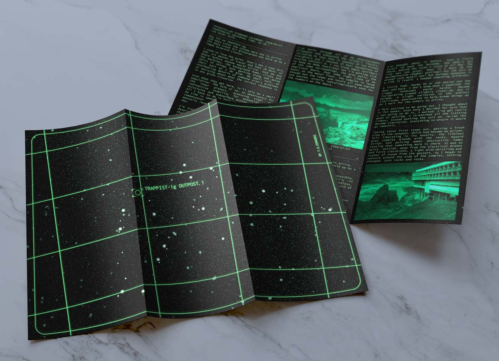
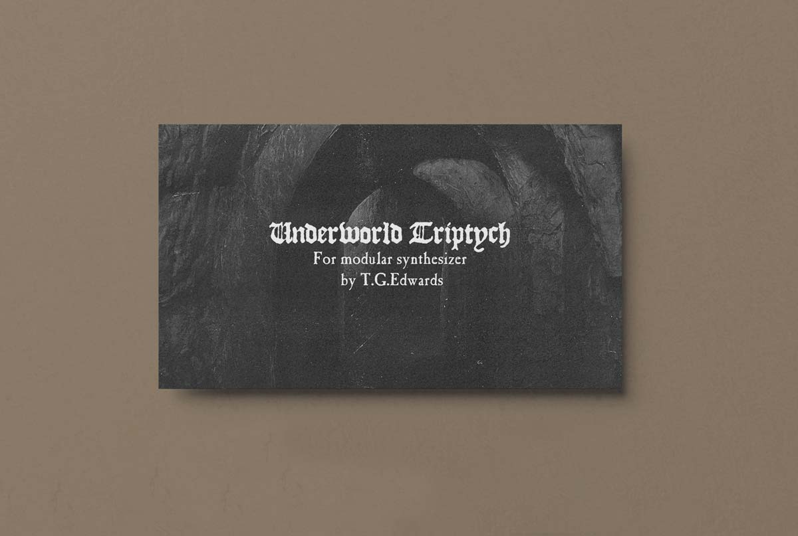
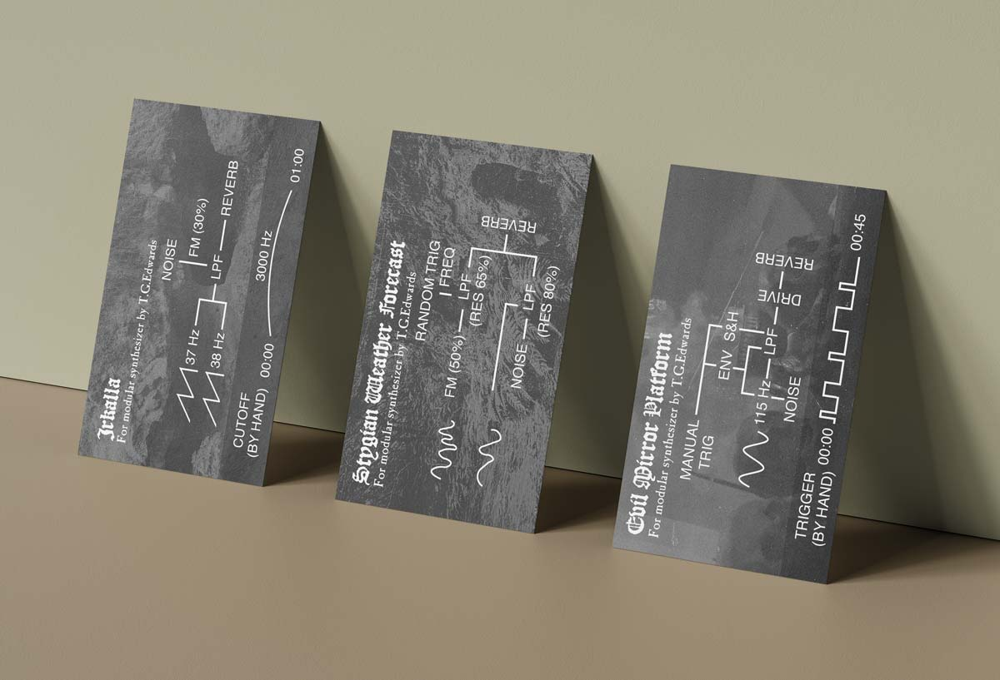

Contents
1. Street Wizards RE-PURPOSING2. The Fates CHOICE
3. Trappist-1g Outpost 1 NOISE
4. Underworld Triptych REDUCTION
1. Street Wizards
RE-PURPOSING
Street Wizards is an exercise in re-enchantment. Re-purposing graffiti tags that for some, could be considered unwanted additions to the urban landscape and presenting an alternative way of looking at something we encounter every day.
Tags are esoteric- the author uses a pseudonym to retain anonymity without sacrificing recognisability. A comparison could be made to sigil magick- magicicians obscuring names and phrases, re-constructing them into abstract symbols for purposes known to themselves but not necessarily to others.
To test and illustrate the idea, I created a quick patch on Max MSP that converts text to notes:
Street Wizards Max Patch.maxpat
Street Wizards Score Colour | Street Wizards Score B&W

2. The Fates
CHOICEThe Fates combines optionality with loose instructions to transfer choice from the composer to the player(s). The rhythms and melody lines have been re-purposed from ancient greek music- reduced to their shapes to allow room for challenge, interpretation and variation. The combination of melody and drone are inspired by the ancient Greek instrument- the Aulos.
The Fates Score A4 Colour | The Fates Score A4 B&W

3. Trappist-1g Outpost 1
NOISE
This piece takes unwanted noise from my practice and brings it to the fore: the avoided, discarded, unrecorded, unnoticed; the breathing, the plugging, scraping, turning, electrical humming. All audio sources originate from power and digital module background hum; and ambient room recordings; captured breath sounds; and cables being plugged and unplugged during sessions recording modular on headphones.
This finished piece tells the story of the solitary life of a desk-worker alone on a distant planet- imagining a scenario where unwanted electrical sounds make up most of the sounds the character hears. To accompany the track I created a map showing the location of Trappist within the Aquarius constellation and Outpost 1 logbook entries.
Giving the listener a story to read while listening to the piece, helps to resituate the sounds back into the background that they came from, but with a new appreciation.
Trappist-1 Map | Outpost Logbook Entries

4. Underworld Triptych
REDUCTION
These pieces strip my practice away to reveal the bare skeletons of some of my sounds. What remains are only the essential connections for each piece, now small enough to fit on a business card.
These resulting skeletal pieces can then be recreated by others for the purposes of listening, learning, or expanding upon.
The scores are quite prescriptive in the connections and at times the knob settings in order to get the user to the right place. Where there is non-specificity, the pieces reward exploration within the framework that I have set.
I - Irkalla | II - Stygian Weather Forecast | III - Evil Mirror Platform


Back to top